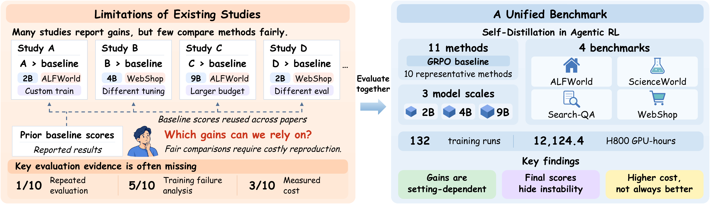
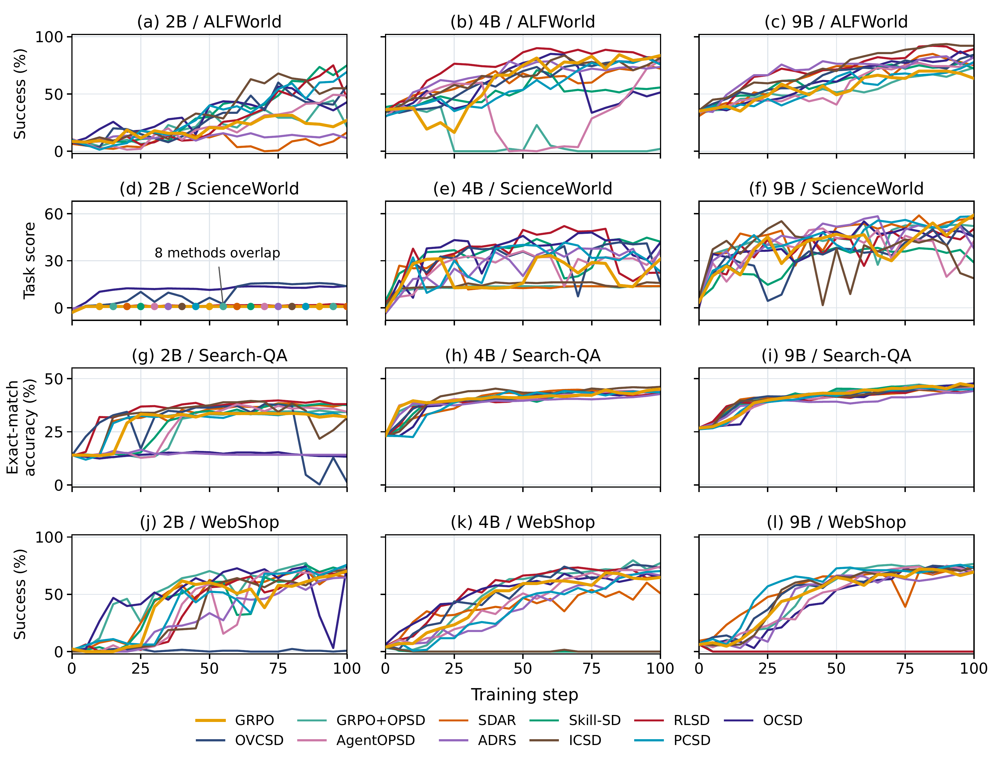
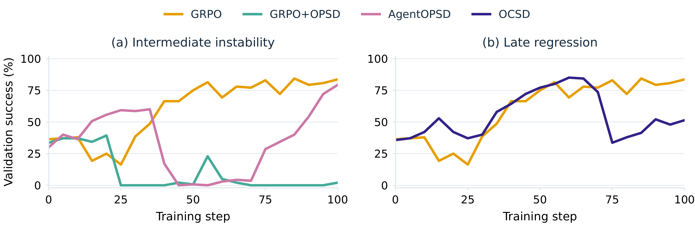
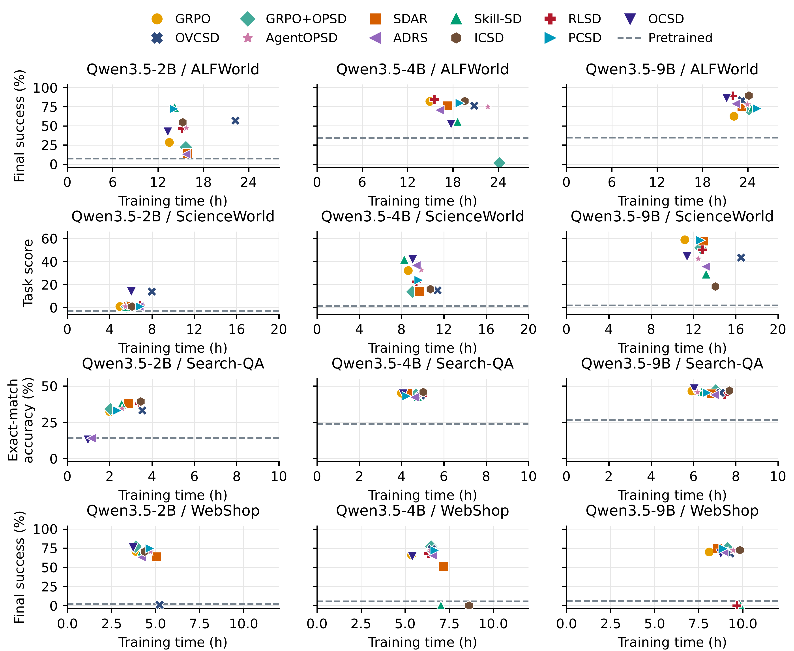

No universal winner
Method rankings change with the benchmark and model size. Gains in selected settings do not establish broad superiority over GRPO.
As more self-distillation methods are proposed for agentic reinforcement learning, we wanted to understand which ideas are worth building on. We invested in a shared evaluation to understand where these methods help, where they struggle, and what they cost. A method need not win everywhere to be useful. We hope that making both its strengths and limitations visible helps others choose a starting point and build more reliable agents.
01 / The study

Self-distillation methods for agentic reinforcement learning are proliferating, but comparisons often reuse baseline scores obtained under different experimental conditions. Direct comparisons remain limited, with less attention paid to training stability and computational cost. We compare ten representative methods against GRPO across four benchmarks and three model sizes, conducting 132 training runs and repeated final evaluation over eight rollout seeds. The results show that gains over GRPO are setting-dependent, strong final performance can mask unstable training, and additional computation does not consistently translate into better performance. This independent benchmark supports a more reliable and cost-aware assessment of progress in agent training.
Method rankings change with the benchmark and model size. Gains in selected settings do not establish broad superiority over GRPO.
A strong final score can hide collapse, recovery, or late regression during training.
Equal training steps do not mean equal cost, and extra teacher computation does not guarantee better results.
Experimental scope
Three model sizes across four interactive environments, with 100 training steps per run and validation every five steps.
GRPOGRPO+OPSDSDARSkill-SDRLSDOCSDOVCSDAgentOPSDADRSICSDPCSD
Final evaluation uses the same fixed task sets as validation, with eight rollout seeds at temperature 0.4. All methods are evaluated without privileged teacher context.
02 / Final performance
No method consistently outperforms GRPO across all twelve settings. Even a strong aggregate result can coexist with substantial losses on individual tasks.
03 / Training dynamics
Validation trajectories reveal behavior that final rankings miss. Across 132 runs and 2,772 validation checkpoints, the study examines learning progress, peak-to-final declines, and low-performing outcomes.

On 4B ALFWorld, AgentOPSD undergoes a large decline before recovering, GRPO+OPSD remains low after collapse, and OCSD loses part of its earlier gains. A final score alone does not distinguish these training histories.

04 / Computational cost
Fixed-step comparisons are not fixed-compute comparisons. Rollout length and teacher computation vary across methods, so we pair final performance with measured training time in every setting.

A useful improvement must be judged by where it works, how reliably it learns, and the resources it requires.
Explore the study
Environment setup, benchmark preparation, training, checkpoint merging, and repeated evaluation are documented in the repository.